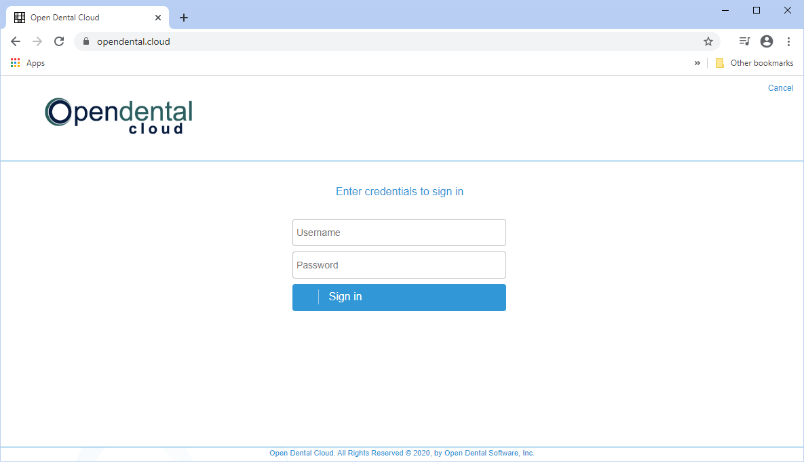
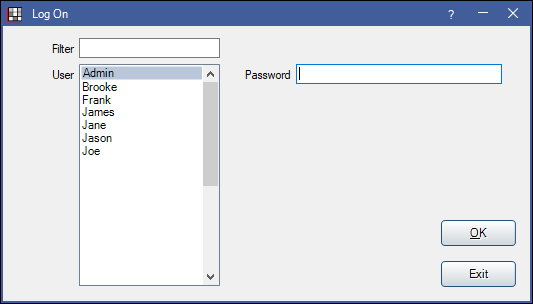

Open Dental Cloud Sign In
Users sign into Open Dental Cloud in order to access their instance of Open Dental.
Sign-in credentials are generated by Open Dental HQ. Users will receive their credentials after signing up for Open Dental Cloud.
The OpenDentalCloudClient is required for users wishing to access third-party integrations from within Open Dental Cloud. It should be installed on each workstation accessing Open Dental Cloud. See Open Dental Cloud Client for installation.
- Navigate to the Open Dental Cloud URL provided by Open Dental HQ.
- Enter the office's Open Dental Cloud Username and Password. This is the same for all users accessing the database.
- If a newer version of Open Dental Cloud Client is available, users will be prompted to install it at this time.
- Log onto Open Dental using Open Dental user credentials.
Note: We recommend each User have their own logon credentials in Open Dental (see Security). Strong passwords are turned on by default for Open Dental Cloud users.
- Users without the Allow Login From Any Location permission can only log in from workstations with an IP Address listed on the Allowed List.
- If the user does not have the Allow Login From Any Location permission or Security Admin permission, they must have an office administrator add their IP to the list.
- If the user does not have the Allow Login From Any Location permission, but they do have the Security Admin, they will be prompted to add their IP address to the allowed list.
- If the allowed number of sessions has been met, another session cannot open and a prompt will appear.
- Click No to close the prompt and close the session.
- Click Yes to close the session of another user.
- Users with the Security Admin also have the option to increase the session limit.
Multiple Instances of Open Dental Cloud
Open Dental Cloud users will have a set number of sessions available to use at one time, based on the office's plan. Users may open more than one session on the same browser, however it does count as a new session.
Additional sessions may be added to the plan as needed.
Navigating Windows
Use the menu in the bottom left to navigate between open windows within the Open Dental session.

Logging Off
Because sessions are limited, it is important to log off and close the Open Dental Cloud tab.
First, log off of the Open Dental user, then close Open Dental Cloud.
Close the tab hosting Open Dental Cloud to end the session. The following prompt will appear:
Click Leave to close.